Collection
La Chronique des pèlerins
Vingt-quatre pages en deux livres racontent le monde tel que les pèlerins l'ont trouvé. Le premier livre (1 à 12) dit les Anciens, l'étoile tombée et chaque merveille ; le second (13 à 24) ce qu'ils trouvèrent après : le Dédale et son Minotaure, l'Arène, la Tour des Vents, le Temple des Énigmes, les Champs Mille-Fleurs, le mammouth pris dans la glace, les phares, l'observatoire qui vit l'Astrelume, le Seuil, la Tour de l'Enfer, les dieux et le dernier pèlerin. Chaque page a son illustration et sa rareté :
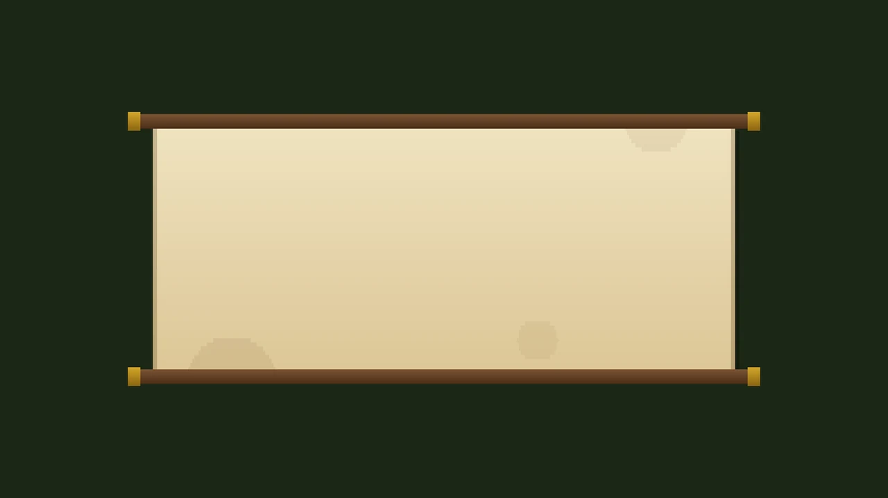
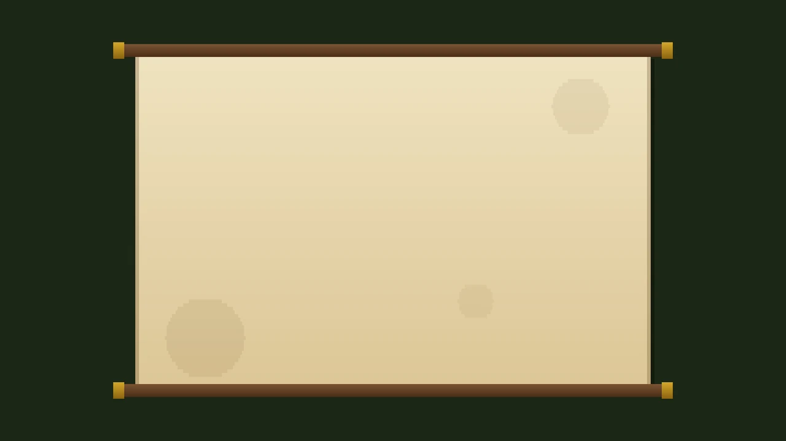
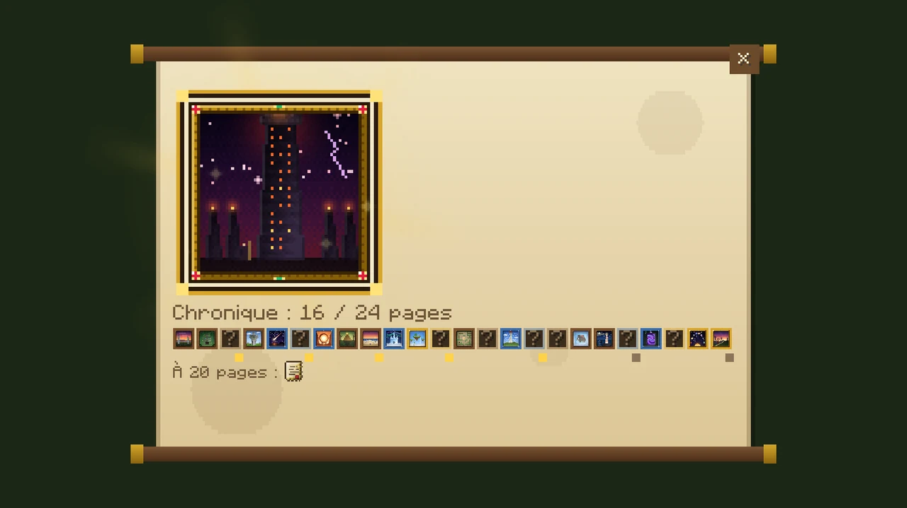
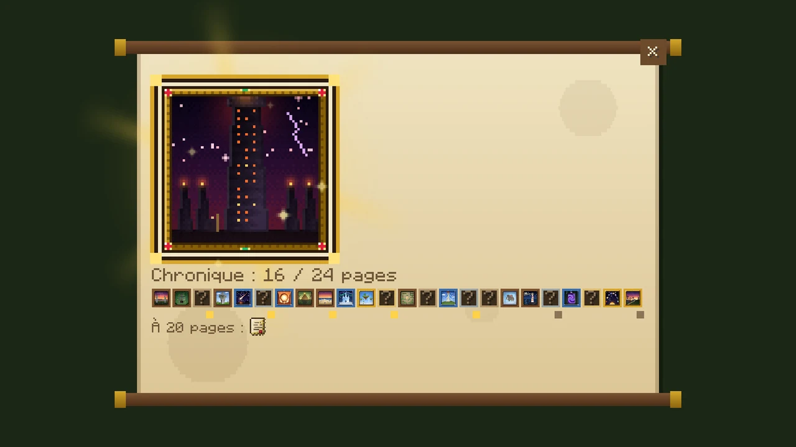
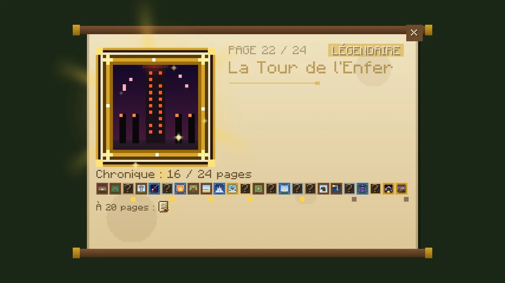
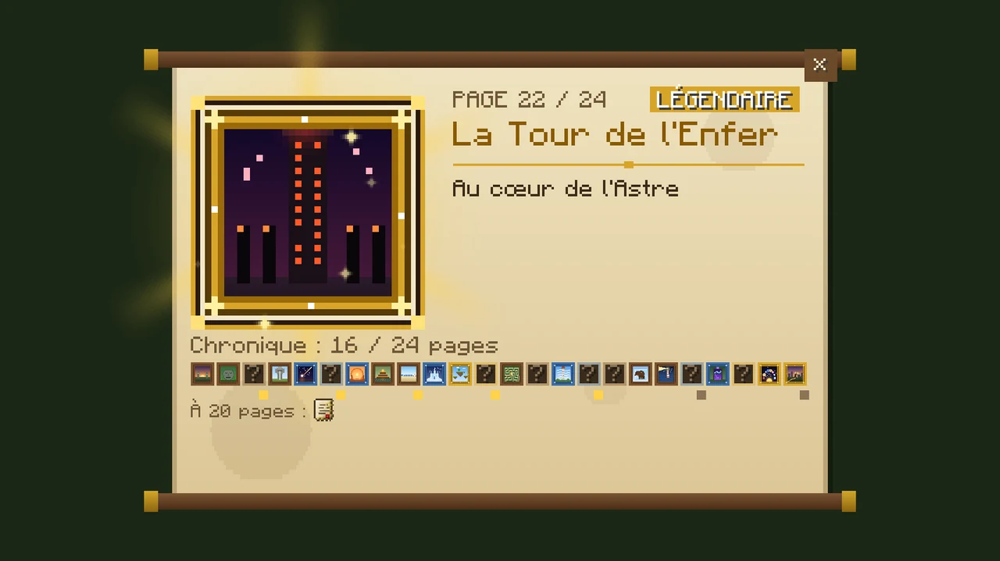
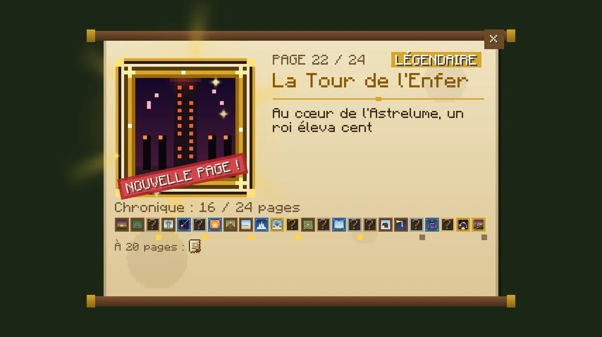
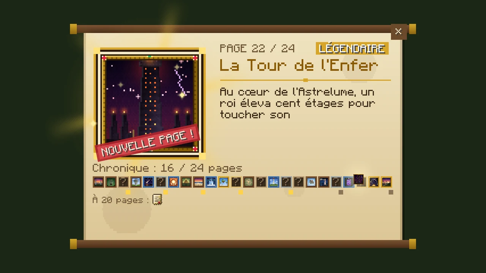
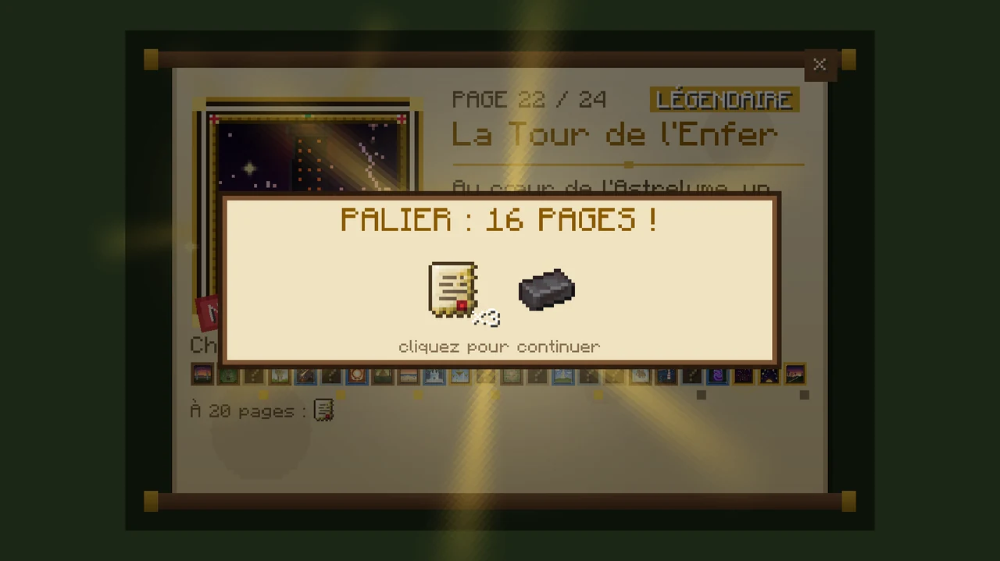
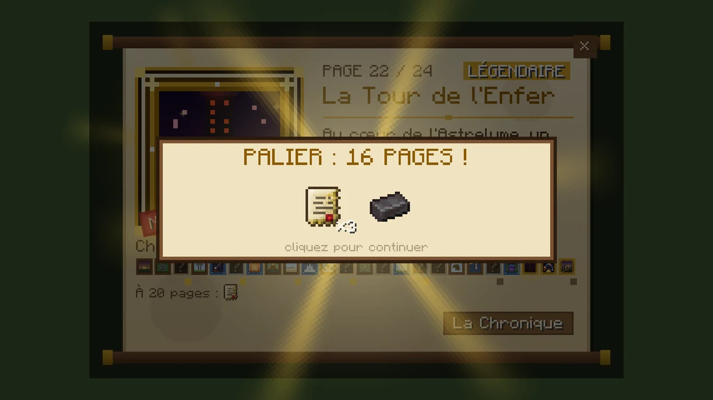
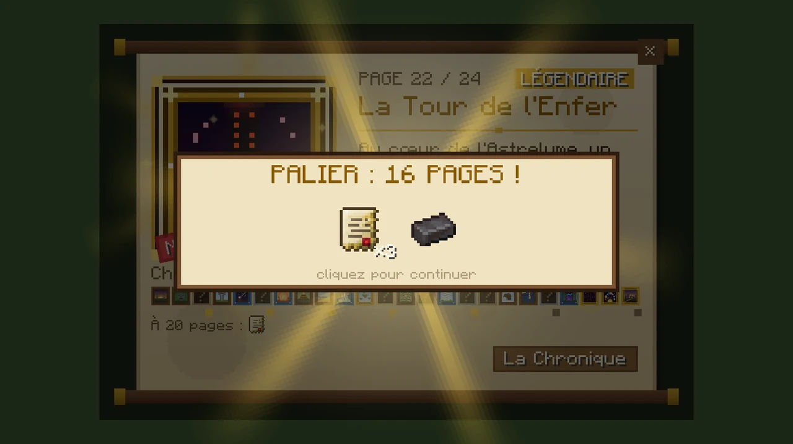
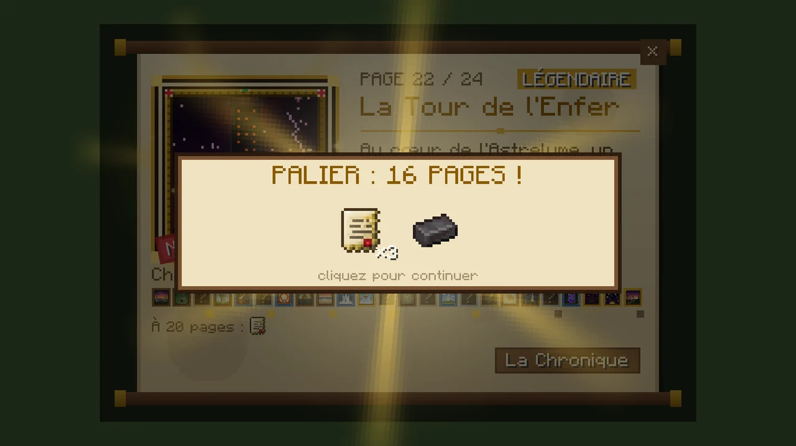
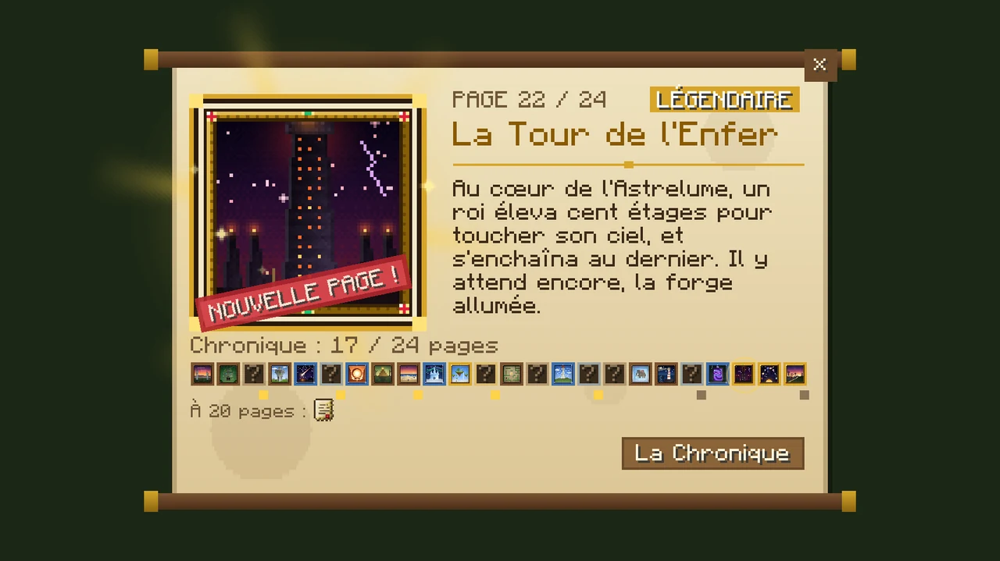
Cliquez sur une page, ou sélectionnez-la puis appuyez sur Entrée, pour la retourner.
Page 1 : Le Premier Matin
Avant les pèlerins, avant les villages, les Anciens gravaient leurs glyphes dans la pierre et donnaient huit noms à la terre. Leurs lampes brûlent encore là où leurs salles sont tombées.
CommunePage 2 : Les Anciens
Ils taillaient leurs propres visages dans les montagnes. Du plus grand, il ne reste qu'une tête, enfoncée dans la jungle, les yeux encore allumés, la bouche ouverte comme une porte.
CommunePage 3 : L'Arbre-Monde
Le premier arbre poussa où serait la première forêt. Ses racines tiennent le bois ensemble ; un escalier monte en lui jusqu'à une salle où les Anciens gardaient leurs graines.
CommunePage 4 : Les Colosses
Les Anciens éveillèrent des géants de pierre pour garder leurs tertres. La plupart dorment sous les plaines. L'un d'eux est encore debout, les mains sur son épée, et il y a une salle dans sa poitrine.
CommunePage 5 : La Chute de l'Étoile
Une étoile tomba au temps des Anciens et creusa la terre comme un bol. Son cœur était froid, et plein de ce qui n'appartient pas à ce monde.
RarePage 6 : Les Cimes de Prisme
La poussière de l'étoile retomba sur les montagnes et devint cristal. Dans l'une d'elles s'ouvrit une géode vaste comme une cathédrale ; des golems furent chargés de la garder.
RarePage 7 : L'Arche du Soleil
Les prêtres du soleil des canyons dressèrent un anneau de pierre pour retenir le soleil le jour le plus long. Ils y suspendirent le leur, et cachèrent leur or dessous.
RarePage 8 : Le Marais d'Ambre
Le marais avala pierre après pierre le temple des gardiens de l'ambre. L'ambre garde tout ce qui y tombe ; l'eau aussi, et ce qui y vit.
CommunePage 9 : Le Léviathan
Quand la mer se retira, le grand serpent resta sur le rivage. Ses os y sont encore, et la marée cache ses trésors dans son crâne.
CommunePage 10 : Le Palais de Givre
Une reine de l'hiver bâtit sa salle d'une glace qui ne fond jamais. Elle n'est plus ; ce qui gardait son trône, si.
RarePage 11 : Les Îles du Ciel
Quand l'étoile frappa, la terre fut arrachée jusqu'au ciel, et jamais elle ne retomba. Une corde de baies pend de la plus grande île pour qui ose grimper.
LégendairePage 12 : Les Pèlerins
Nous sommes venus après, de merveille en merveille, une boussole à la main, et nous nous sommes établis là où les Anciens avaient vécu. Qui lit toutes ces pages marche dans nos pas.
LégendairePage 13 : Le Dédale
Les Anciens enfermèrent dans un labyrinthe de haies ce qu'ils ne pouvaient tuer : un homme à tête de taureau. Il en garde encore le cœur, et suit à l'odeur quiconque y entre.
CommunePage 14 : L'Arène
Les champions des villes s'y mesuraient à cinq vagues de monstres. Le cor est encore sur son estrade : qui le sonne réveille le sable.
CommunePage 15 : La Tour des Vents
Une tour élevée pour défier le vent, que le vent n'a jamais abattue. On la gravit contre la montre ; à son sommet, la pierre garde le nom des plus rapides.
RarePage 16 : Le Temple des Énigmes
Quatre glyphes, et des bougies pour dire leur ordre. Les prêtres de la jungle ne fermaient pas leurs portes à clé : ils les fermaient à l'esprit.
RarePage 17 : Les Champs Mille-Fleurs
Là où l'étoile n'est pas tombée, la terre a fleuri pour elle. Les glycines y pleurent du rose, et des oiseaux d'or y nichent qu'on ne voit nulle part ailleurs.
CommunePage 18 : Le Mammouth
Le froid a gardé intact un mammouth des premiers hivers, debout dans un bloc de glace. Ce qu'il portait sur le dos y est encore.
CommunePage 19 : Les Phares
Les pèlerins venus par la mer cherchaient la lumière des phares. Chacun a son gardien, et chaque gardien une lanterne qu'il ne laisse jamais s'éteindre.
CommunePage 20 : L'Observatoire
Du haut des cimes, les astronomes virent derrière notre ciel un autre ciel, violet et sans soleil, plein de lumière. Ils l'appelèrent l'Astrelume.
RarePage 21 : Le Seuil
Un cadre de pierre, une gemme, et le ciel violet s'ouvre. Ce qu'on trouve de l'autre côté vaut des sceaux ; ce qui y vit le garde.
RarePage 22 : La Tour de l'Enfer
Au cœur de l'Astrelume, un roi éleva cent étages pour toucher son ciel, et s'enchaîna au dernier. Il y attend encore, la forge allumée.
LégendairePage 23 : Les Dieux
Au-dessus de tout, huit dieux ont chacun leur monde. Qui porte l'un d'eux reçoit la clé de sa planète : Mars de feu, Neptune sous la mer, Uranus couchée sur le flanc.
LégendairePage 24 : Le Dernier Pèlerin
Tu as lu tout ce que nous savions. Il n'y a plus de page après celle-ci : la suite, c'est toi qui l'écris. Prends la boussole, et pars.
Légendaire


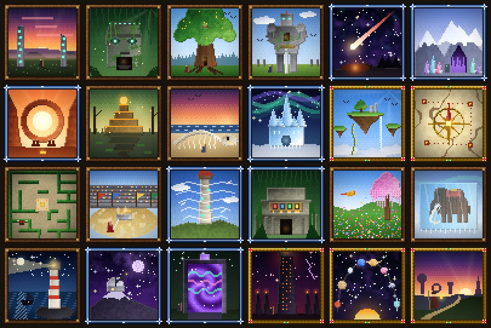
(agrandir l'image)| Rareté | Pages | Chance relative |
|---|---|---|
| Commune (cadre de bois) | 1, 2, 3, 4, 8, 9 · 13, 14, 17, 18, 19 | ×10 |
| Rare (bleu et argent) | 5, 6, 7, 10 · 15, 16, 20, 21 | ×4 |
| Légendaire (or, brillante) | 11, 12 · 22, 23, 24 | ×1 |
Les pages ne se trouvent que dans les coffres des merveilles, nulle part ailleurs : chaque coffre de merveille en contient exactement une, grand ou petit. La page est tirée au hasard parmi les vingt-quatre, selon sa rareté (une commune dix fois plus souvent qu'une légendaire) : on peut tomber sur une page qu'on a déjà : elle se relit, et reste telle quelle dans votre sac. Clic droit pour lire : le parchemin se déroule, le tableau s'élève dans la lumière de sa rareté, le texte s'écrit, le tampon « NOUVELLE PAGE » tombe et la page vole à sa place parmi les vingt-quatre. Elle passe dans votre journal (3 fragments) et le parchemin s'efface. Les pages ne montrent pas le chemin : seule la Boussole des Merveilles y mène.
Chaque page est un tableau de 64 × 64 pixels, peint avec sa lumière et son atmosphère, dans le cadre de sa rareté : noyer et laiton pour une commune, lapis et argent serti de saphirs pour une rare, or ciselé, rubis et émeraude pour une légendaire. Chacun montre le lieu tel qu'il est dans le jeu, un pèlerin quelque part pour l'échelle.
| Palier | Récompense |
|---|---|
| 3 pages | 16 fragments, 2 pommes dorées |
| 6 pages | 24 fragments, 4 diamants |
| 9 pages | Totem d'immortalité, pomme dorée enchantée |
| 12 pages | La Boussole des Merveilles (la seule façon de l'obtenir) et 2 Sceaux d'invocation |
| 16 pages | 3 Sceaux d'invocation, un lingot de netherite |
| 20 pages | 64 fragments, 2 pommes dorées enchantées |
| 24 pages | La Chronique reliée, des élytres et 5 Sceaux d'invocation |
Le livre de la Chronique a deux onglets, Livre I et Livre II, douze cartes chacun : les pages lues en couleur, les manquantes dans l'ombre, leur cadre seul trahissant leur rareté ; la barre des sept paliers et leurs récompenses au-dessus. Cliquez une page lue pour la relire. Ouvert par la Chronique reliée, par le bouton d'une page, ou par /contrees chronicle.